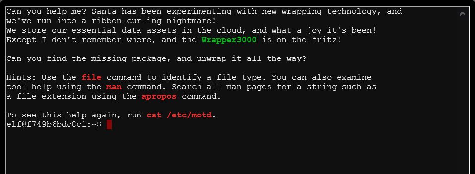

2) Investigate S3 Bucket
difficulty 🎄
The Objective
When you unwrap the over-wrapped file, what text string is inside the package? Talk to Shinny Upatree in front of the castle for hints on this challenge.
Chat with Shinny Upatree
After we help Shinny with the Kringle Kiosk Terminal Challenge the following conversation ensues.
Golly - wow! You sure found the flaw for us!
Say, we've been having an issue with an Amazon S3 bucket.
Do you think you could help find Santa's package file?
Jeepers, it seems there's always a leaky bucket in the news. You'd think we could find our own files!
Digininja has a great guide, if you're new to S3 searching.
He even released a tool for the task - what a guy!
The package wrapper Santa used is reversible, but it may take you some trying.
Good luck, and thanks for pitching in!
Hints Courtesy Shinny Upatree
Find Santa's Package
Find Santa's package file from the cloud storage provider. Check Josh Wright's talk for more tips!
Leaky AWS S3 Buckets
It seems like there's a new story every week about data exposed through unprotected Amazon S3 buckets.
Finding S3 Buckets
Robin Wood wrote up a guide about finding these open S3 buckets.
Bucket_finder.rb
He even wrote a tool to search for unprotected buckets!
Santa's Wrapper3000
Santa's Wrapper3000 is pretty buggy. It uses several compression tools, binary to ASCII conversion, and other tools to wrap packages.
Solution
In this challenge we need to find Santa's package file. We understand that this file is stored in an Amazon S3 bucket. To access Santa's package we would need to know the S3 bucket name and what's more we would need to have permissions to access the bucket contents.
Hey but data exposed through unprotected S3 buckets is not uncommon so we could get lucky and get around permissions.
Finding the S3 bucket
On terminal start-up we are greeted with the following MOTD.The word "Wrapper3000" has been highlighted in green so this must be relevant. Could this maybe be the name of the bucket?
The hints highlighted in red seem to deal with unwrapping the package file once we find it.

On listing directory contents we find the program bucket_finder.rb and this is the tool we will use to find unprotected s3 buckets.
usage:
./bucket_finder.rb wordlist
All we need to do is specify a wordlist and the tool checks each word to see if that bucket name exists in the Amazon's S3 system. Any that it finds it will check to see if the bucket is public, private or a redirect.
Let's first run the tool with the default wordlist given to us
elf@f749b6bdc8c1:~/bucket_finder$ ls -l
total 20
-rw-r--r-- 1 elf elf 2550 Dec 5 00:00 README
-rwxr-xr-x 1 elf elf 9121 Dec 17 13:08 bucket_finder.rb
-rw-r--r-- 1 elf elf 28 Dec 5 00:00 wordlist
elf@f749b6bdc8c1:~/bucket_finder$ cat wordlist
kringlecastle
wrapper
santa
elf@f749b6bdc8c1:~/bucket_finder$ ./bucket_finder.rb wordlist
http://s3.amazonaws.com/kringlecastle
Bucket found but access denied: kringlecastle
http://s3.amazonaws.com/wrapper
Bucket found but access denied: wrapper
http://s3.amazonaws.com/santa
Bucket santa redirects to: santa.s3.amazonaws.com
http://santa.s3.amazonaws.com/
Bucket found but access denied: santa
The output tells us that while all these buckets exist, we don't have access to any of them 😞
Let's add our guess "wrapper3000" to the wordlist and try the program again. (Note the lower case "w", Amazon S3 bucket names have certain restrictions and must adhere to certain rules one of which states that
Bucket names can consist only of lowercase letters, numbers, dots (.), and hyphens (-).)
elf@f749b6bdc8c1:~/bucket_finder$ echo "wrapper3000" >> wordlist
elf@f749b6bdc8c1:~/bucket_finder$ cat wordlist
kringlecastle
wrapper
santa
wrapper3000
elf@f749b6bdc8c1:~/bucket_finder$ ./bucket_finder.rb wordlist
http://s3.amazonaws.com/kringlecastle
Bucket found but access denied: kringlecastle
http://s3.amazonaws.com/wrapper
Bucket found but access denied: wrapper
http://s3.amazonaws.com/santa
Bucket santa redirects to: santa.s3.amazonaws.com
http://santa.s3.amazonaws.com/
Bucket found but access denied: santa
http://s3.amazonaws.com/wrapper3000
Bucket Found: wrapper3000 ( http://s3.amazonaws.com/wrapper3000 )
<Public> http://s3.amazonaws.com/wrapper3000/package
And Voila we have access to this bucket and the program conveniently spits out the URL to the public package file inside the bucket. Let's download the file.
elf@f749b6bdc8c1:~/bucket_finder$ curl http://s3.amazonaws.com/wrapper3000/package > package
% Total % Received % Xferd Average Speed Time Time Time Current
Dload Upload Total Spent Left Speed
100 829 100 829 0 0 9987 0 --:--:-- --:--:-- --:--:-- 9987
elf@f749b6bdc8c1:~/bucket_finder$ ls
README bucket_finder.rb package wordlist
Unwrapping the Package File
Take another look at the MOTD for some hints on unwrapping. Three commands are suggested
fileto identify a file type
manto get more information on a command
aproposto search man pages
Let's inspect this file by using the file command and cat command
elf@f749b6bdc8c1:~/bucket_finder$ file package
package: ASCII text, with very long lines
elf@ee259b7eb5a8:~/bucket_finder$ cat package
UEsDBAoAAAAAAIAwhFEbRT8anwEAAJ8BAAAcABwAcGFja2FnZS50eHQuWi54ei54eGQudGFyLmJ6MlVUCQADoBfKX6AXyl91eAsAAQT2AQAABBQAAABCWmg5MUFZJlNZ2ktivwABHv+Q3hASgGSn//AvBxDwf/xe0gQAAAgwAVmkYRTKe1PVM9U0ekMg2poAAAGgPUPUGqehhCMSgaBoAD1NNAAAAyEmJpR5QGg0bSPU/VA0eo9IaHqBkxw2YZK2NUASOegDIzwMXMHBCFACgIEvQ2Jrg8V50tDjh61Pt3Q8CmgpFFunc1Ipui+SqsYB04M/gWKKc0Vs2DXkzeJmiktINqjo3JjKAA4dLgLtPN15oADLe80tnfLGXhIWaJMiEeSX992uxodRJ6EAzIFzqSbWtnNqCTEDML9AK7HHSzyyBYKwCFBVJh17T636a6YgyjX0eE0IsCbjcBkRPgkKz6q0okb1sWicMaky2Mgsqw2nUm5ayPHUeIktnBIvkiUWxYEiRs5nFOM8MTk8SitV7lcxOKst2QedSxZ851ceDQexsLsJ3C89Z/gQ6Xn6KBKqFsKyTkaqO+1FgmImtHKoJkMctd2B9JkcwvMr+hWIEcIQjAZGhSKYNPxHJFqJ3t32Vjgn/OGdQJiIHv4u5IpwoSG0lsV+UEsBAh4DCgAAAAAAgDCEURtFPxqfAQAAnwEAABwAGAAAAAAAAAAAAKSBAAAAAHBhY2thZ2UudHh0LloueHoueHhkLnRhci5iejJVVAUAA6AXyl91eAsAAQT2AQAABBQAAABQSwUGAAAAAAEAAQBiAAAA9QEAAAAA
This looks like some encoded data. Let's use CyberChef tool with the Magic recipe to decode this.
- Cyberchef detects the data as base64 encoded and decodes it.
- It detects that the decoded data is a zip archive and proceeds to extract the following file from the archive.
package.txt.Z.xz.xxd.tar.bz2
-
It further detects that the extracted file is bz2 compressed data and proceeds to uncompress it.
-
It detects the uncompressed data as a tar
By default the depth is 3 but by increasing the depth, CyberChef is able to unravel many more layers of the file.
However CyberChef doesn't seem able to decode beyond a certain point (It isn't able to proceed past package.txt.Z.xz). Let's try this process on linux terminal. We would use file command to detect the file type and find out the matching operation for this file type (either by a google search or using the apropos or man command).
Below is a visualisation of the "wrapping" and "unwrapping" process along with matching commands.
Finally we can apply the operation to "unwrap" one layer of the file. The code below shows the entire process.
elf@bf22ef953c26:~/bucket_finder$ file package
package: ASCII text, with very long lines
elf@bf22ef953c26:~/bucket_finder$ base64 -d package > package.zip
elf@bf22ef953c26:~/bucket_finder$ file package.zip
package.zip: Zip archive data, at least v1.0 to extract
elf@bf22ef953c26:~/bucket_finder$ unzip package.zip
Archive: package.zip
extracting: package.txt.Z.xz.xxd.tar.bz2
elf@bf22ef953c26:~/bucket_finder$ file package.txt.Z.xz.xxd.tar.bz2
package.txt.Z.xz.xxd.tar.bz2: bzip2 compressed data, block size = 900k
elf@bf22ef953c26:~/bucket_finder$ bunzip2 package.txt.Z.xz.xxd.tar.bz2
elf@bf22ef953c26:~/bucket_finder$ file package.txt.Z.xz.xxd.tar
package.txt.Z.xz.xxd.tar: POSIX tar archive
elf@bf22ef953c26:~/bucket_finder$ tar -xvf package.txt.Z.xz.xxd.tar
package.txt.Z.xz.xxd
elf@bf22ef953c26:~/bucket_finder$ file package.txt.Z.xz.xxd
package.txt.Z.xz.xxd: ASCII text
elf@bf22ef953c26:~/bucket_finder$ xxd -r package.txt.Z.xz.xxd > pack.xz
elf@bf22ef953c26:~/bucket_finder$ file pack.xz
pack.xz: XZ compressed data
elf@bf22ef953c26:~/bucket_finder$ unxz pack.xz
elf@bf22ef953c26:~/bucket_finder$ file pack
pack: compress'd data 16 bits
elf@bf22ef953c26:~/bucket_finder$ uncompress pack
gzip: pack: unknown suffix -- ignored
elf@bf22ef953c26:~/bucket_finder$ mv pack pack.gz
elf@bf22ef953c26:~/bucket_finder$ uncompress pack.gz
elf@bf22ef953c26:~/bucket_finder$ file pack
pack: ASCII text
elf@bf22ef953c26:~/bucket_finder$ cat pack
North Pole: The Frostiest Place on Earth
Rejoice
We successfully unwrapped Santa's super over-wrapped package!
Answer
North Pole: The Frostiest Place on Earth